Using Rosegarden
This document is in a state of transition. Please forgive the mess! I wanted to get it further along before doing another update, but we've been shuffling things around a bit, and I lost track of the more "stable" version of this document. Consider it a preview of things to come.1. Introduction
This tutorial assumes that you have a recent version of Rosegarden 4, and that it's working properly. I leave it to you to surf to the Rosegarden download page and work outward from there. Several distros already have a rosegarden4 or rosegarden-4 package available through mainstream or third-party channels, and if it isn't already, yours will probably be among them soon.
My goal in writing this tutorial is to learn through teaching. You and I are in this together every step of the way. I'm an author of documentation, not of source code, and much of the inner working of Rosegarden is just as much of a magical mystery to me as it is to you. In short, I'm a user, just like you, with user problems and a user perspective.
My aim here is not to write an exhaustive technical manual that covers every single possibility in dry detail. This is a meandering journey through Rosegarden, taking you through a real-world project one concept at a time, and showing you things of interest along the way. I expect that once I've lead you to water, you can choose a spot from which to drink for yourself. I hope that by sharing my experiences with you, we'll both be able to get more out of this exciting new package.
1.2 The Tutorial's Project
One of the most important personal uses I have for Rosegarden is creating and printing playable scores and accompaniment for my own musical purposes. I'm surrounded by people who think a C# is some kind of saltwater fish, and so I make heavy use of my computer so that I'm not always playing alone. Toward that end, I often cheat by starting with a MIDI file of some piece I like, then re-arranging it however necessary so that I have a part that I can play on my flute, as well as accompaniment.
I begin these projects with a wide variety of source material, but for the purpose of this tutorial, I will stick with a completely original composition, so as to avoid any potential copyright issues.
Inspiration to compose only strikes me a few times a decade, and I'm not currently inspired. As such, I'm pulling something out of the archives. This may not be a good composition, but I own the rights to it, and can mangle it any way I choose without fear of any consequence more dire than rotten food being thrown at my head.
So let's start with this little piece that I arranged for eventual inclusion in a computer game. So you can follow along at home, you can get a copy of the file here: ultima.mid
This file was last touched with a sequencer running on a completely different platform, and affords us the opportunity to deal with some of the issues involved when importing foreign files into Rosegarden.
The piece is short and simple, intended to be looped as background music for an adventure game. I gave no particular thought to ever playing this live on real instruments, and it's quite likely that none of the parts will be playable on the instruments I assigned to them. As a flutist, I am primarily concerned with the creation of a playable flute part, so that is where most of my score editing effort will go in writing this tutorial.
With that background in place, I shall endeavor to lead you through as many of Rosegarden's features as I can, within the context of this project. I expect to transform it along the way, and indeed to make up excuses to use new features. When we're finished, we should both have a good understanding of how to use Rosegarden to solve real-world problems.
1.3 The Author's Studio
There is a wide array of hardware available on the market. Some of you will have inexpensive soundcards, and others will have expensive, professional studio cards with more bells and whistles than you can shake a stick at. Some of you will be using your soundcard's on-board synth, others will be using one or myriad external synths. All of the source MIDI files that I work with in this tutorial are tailored to take advantages of features on
Obviously, I can only show you what I can do myself, and that is hardware dependant. I'd like you to bear in mind what is sitting in front of me as I write this, and thus I will share the details of my “studio.”
I'm running a 1.0 GHz Athlon system. The box runs Debian Woody with aftermarket KDE 3.0.3 from a third-party apt-source, and a variety of other add-ons that I've had to compile for myself along the way in order to get my build environment in line for software such as Rosegarden. I'm running a completely stock kernel 2.4.19 that has had no patches applied.
On the audio side of things, my sole soundcard is a Sound Blaster PCI 128, driven by ALSA 0.9.0rc6 and Jack from CVS, with Woody's supplied LADSPA SDK and plugins.
On the MIDI side of things, I have a joystick port MIDI box for the Sound Blaster, to which I attach a Fatar MIDI-72 controller keyboard and a Roland SC-33 Sound Canvas. All of the source MIDI files that I work with in this tutorial were sequenced to make use of this particular GS synth, and as such, some of what I say in that area will not apply or even make sense to you if you're using an XG or other synth to follow along.
In addition to the Roland, I'm running an IWU Soft Synth via iiwusynth 0.2.2. Details of getting these working successfully are covered in the FAQ.
As previously mentioned, I run Rosegarden from CVS, which I compile frequently. You may wish to take a look at the script I use for that purpose, which has been doing a good job of grabbing the updates, building them, and managing installed packages via checkinstall. I offer no support or suggestion for modification of the script; offering it only as a convenience, and leaving you to your own devices to figure out how to adapt it to suit your own environment. To get the pretty, Mandrake-style [ OK ] and [FAILED] messages going, you'll also need to snag ANSI_defs.
1.4 Changelog
|
Version |
Date |
By |
Notes |
|
0.pre1 |
12/10/02 |
DMM |
Initial public draft |
|
0.1 |
12/15/02 |
DMM |
Merged into CVS |
|
0.2 |
12/16/02 |
DMM |
Re-structuring... |
1.5 Getting This Tutorial
The latest version of the Rosegarden Tutorial is always available from [URL]. You can also get it from CVS in the same way you get Rosegarden. The module is called tutorial. I'm too lazy to go dig out and prettily format the instructions for this at the moment, but I've given you enough of a hint to get there if you dig for it a bit. :)
1.6 Copyright and License
Copyright © 2002 by D. Michael McIntyre <dmmcintyr@users.sourceforge.net>
As it has been incorporated into the Rosegarden CVS tree, this document is now released under the same terms as Rosegarden itself.
Please contact the author (hey, that's me!) with any suggested corrections, changes or feature requests. All are welcome, but as an author, I'm also an artist, and as such, I reserve the right to express anything said in this document in accordance with my own personal style.
2. The Main Window
Let's begin by starting Rosegarden, and having a look at the Main Window.
TIP: You might want to consider running Rosegarden from a command line, or by way of this script, which you can easily associate with an icon, so that you have the benefit of seeing Rosegarden's status and error messages. This can be a great help in working the kinks out of operation or debugging problems, and it can sometimes be a reassurance to see it working when Rosegarden is processing something particularly hefty and is too busy to bother re-painting its window.
The startrg script can be configured (read the script) to start and wait for Jack and IIWU Synth with output messages in separate xterms, as well as starting an xterm for Rosegarden itself. Close the associated xterm to kill any unwanted processes after Rosegarden exits This is another of my personal convenience scripts, and isn't extremely robust. Feel free to improve it, or to suggest improvements.
Now that Rosegarden is running, let's take a first look around the Main Window. This is where you get an overall view of your composition. There are a number of optional toggles.
In order to share a common frame of reference, let's turn on anything that isn't already displayed by default.
Use the Settings menu to toggle these options. Observe that I had not toggled on the Chord Name Ruler when I took this snapshot. Also note that this is, unsurprisingly, where a number of Rosegarden settings can be configured. We'll come back to some of those later on:

In the Main Window, clockwise from the top left corner, you will see the...
Segment Parameters Pane, where several segment playback parameters can be set:
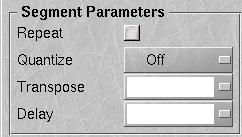
Tracklist, where you manipulate your sequence on a track
level. Notice that each track has a Mute Button
 ,
to allow you to mute individual tracks, and a Record Button
,
to allow you to mute individual tracks, and a Record Button
 ,
which selects the destination track for record operations.
,
which selects the destination track for record operations.

Let's go ahead and play with the Tracklist, though we'll be importing tracks later on and over-writing anything we do here. Click on the <untitled> in one of the tracks, and you'll see an instrument configuration dialog like this one where you can choose the device and channel for the track. Your menus will almost certainly differ, but this is what mine looks like with an out-of-the-box Rosegarden:


This is where we stop for today...
Importing a MIDI File
Start Rosegarden, then use File -> Import -> Import MIDI File... from the menu. Navigate to the location of the file and import it.
Once imported, your screen should resemble this. If it doesn't, take a look at the Settings menu and toggle all the optional displays on:
{kind=link}
Now that we've imported the file, let's see how it fared.
Playing With Transport Tools
Playback Pointer
First, we need to see what it sounds like. Let's get to know the Transport window, and the Playback Pointer, which are two of the tools we'll use to get around in our compositions.
Notice that there's a vertical blue bar in the Segment Pane of the main window. That is the Playback Pointer. You can move it to any arbitrary point in the composition by clicking on the Ruler at the top, or you can use the Transport to move it around. If you don't see it, play with the Transport or the Ruler until you move it out of hiding.
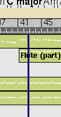
Transport Window
You'll initially have a separate, floating Transport window like this one.
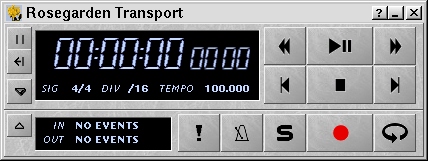
If you can't figure out what any of the buttons do, hover over them a bit, and context-sensitive help will pop up. Of special note are the Panic, Metronome, and Solo buttons.
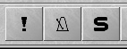
The Panic button transmits an “all notes off” message. Use it, for example, when your synth has gotten a note stuck and the incessant droning of that low C# is driving you up the wall.
The Metronome does what you'd probably expect. You can turn the metronome on during normal playback, as well as recording, and it is a useful tool to use when practicing playing along with your composition.
The Solo button mutes all tracks except for the one that's currently selected, allowing you a convenient way to hear just one part.
Tweaking the Import
Changing the Program, Part One
Find the Play/Pause button and give this composition a listen. It sounds rather lame after this initial import, doesn't it? (Of course, your results will vary depending on the synth you have available as well.)
Before you write me off as a terrible composer, let's get this back to the condition it was in when it left Cakewalk last year. We need to correct for what has been lost in the translation from raw MIDI to Rosegarden's internal format, and then we'll play with it. You'll find the Instrument Parameters here:
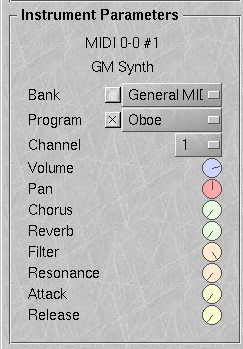
First, we really need to change the drum kit. This piece is supposed to use the Orchestral set. It sounds pretty lame with the standard drum kit, and Rosegarden has dropped the program change from that track, possibly due to my Studio settings. Well, no matter, we'll work around it now and worry about doing it elegantly later. (Much later. The Studio is undergoing some exciting new changes at the moment, and will be very useful by the time I get around to writing about it. That's why I'm putting off mentioning one of Rosegarden's most important features until nearer the end of my tutorial, in Changing the Program Part Two.)
Until we do something about drum kit patch names in the Studio, we'll just use the default General MIDI patch names. About the best we can do at this point is click through the various names until we find our drum kit. First we need to select the first of the two drum tracks, the one labeled “Orchestral bass, crash & snare” so that its parameters are displayed in the Instrument Parameters pane.
Click on the track name to select it. Now click on the Program button. If the checkbox isn't checked, check it. Now you can scroll through with your mouse wheel, or select a name from the drop-down list.
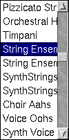
(It so happens that “String Ensemble” corresponds to the GS program number for the “OrcheSet” drum kit... YMMV. I discovered this by trial and error, as you must. We'll do this more elegantly later, don't worry.)
Now it's starting to sound better, but there's still work to do. Let's move on to playing with segments.
A First Look at Segments
Using Segments to Layer Parts
Now is a good time to take a first look at what segments are all about.
What are these segments anyway? They're one of Rosegarden's most powerful features, allowing you to slide notes and audio samples around at will, to cut them up, re-combine them, overlap them, and so on, giving you a high degree of control over the sound of your composition. Let's make use of this feature immediately to deal with an import problem.
You may have noticed some raunchy piano notes that were supposed to be a conga. When I created this file, I had two different percussion tracks tied to channel 10. That was Cakewalk. This is Rosegarden, so let's deal with this the Rosegarden way.
Rather assigning two tracks to the same channel, inviting opportunities for one to interfere with the other, we'll take advantage of overlapping segments to achieve the same result. This will allow us to keep the two portions of the drum pattern separate from each other in a single track.
Take a look at the Segment Pane to the right. This is where you can re-arrange things on a large scale. Notice the Ruler at the top, the Chord Indicator Bar, the Track Names and the Segments. Observe that each track has a Mute and Record button. If any of these features are missing from your display, you can toggle them via the Settings menu:
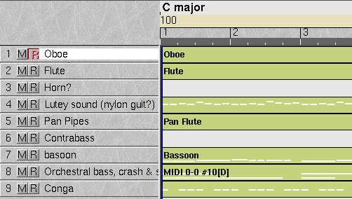
Let's start by cutting out all the empty spaces, and cutting these huge segments into smaller pieces.
Use Edit -> Select All Segments from the menu to highlight all of the segments. Then use Segments -> Auto-Split to automatically split them, eliminating sections of silence, and leaving you with little islands of notey bits.
To get a better overview of the composition, use the Zoom slider at the top right of the main window to zoom out a bit.
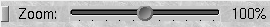
Your screen should then resemble this:
{kind=link}
{kind=link}
2.5.2 Segment Previews
Look closely, and you'll notice that each one of the segments contains a miniature “matrix” or “piano roll” view. You can get some sense of what that bit of music is like just by looking at the segment display, which is a useful visual aid when dragging things around. If this feature is not turned on, turn it on with Settings -> Segment Previews
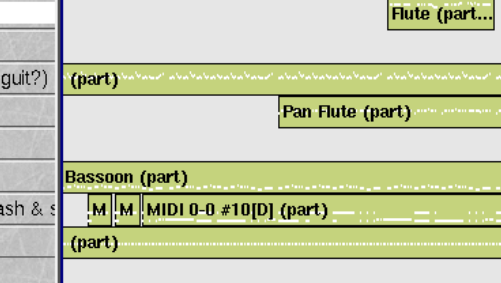
Now, let's overlap the segments. Select the “Conga” segment, and drag it up to the “Orchestral bass, crash & snare” track.
Your screen should now resemble this:
{kind=link}
For now, we'll leave the “Conga” track in place. The layering we've done gets both of these tracks into the same MIDI channel with aplomb, but we may need to drag the big track back out so that we can more readily get to the smaller ones beneath. I don't see a way to select a segment that's buried entirely beneath another segment.
Now that the drum kit has been corrected and both drum parts are playing on the correct channel, it's starting to shape up. The only thing missing is reverb. It sounds rather dull without it.
Instrument Parameters
The SysEx bank that Cakewalk included with this file has been lost in the translation. Luckily, Rosegarden makes it easy to set the initial values for the most common controllers right there in the Instrument Parameters pane of the main window. If this is missing from your display, toggle it on with Settings -> Show Instrument Parameters.
Let's select each track in turn, and dial up the 'verb. Click on the Reverb knob and either use your mouse wheel or else drag the cursor in a straight horizontal or vertical line (don't try to drag it around in a circle) to change the position of the knob. Crank it up. You can never have too much reverb. Now lather, rinse, repeat until every track has major 'verbage. (Or reverbificate to taste, if you insist on having less than maximal 'verbage...)
Depending on your synth's implementation, you can control several other parameters from this panel as well. Volume, Pan, Chorus, and Reverb are perhaps the most commonly-used. If any of these knobs don't seem to have any effect, blame it on your synth.
Now is a good time to save. Remember to save early, save often. Rosegarden is still under heavy development, and it's not fun to see your work evaporate. If you do discover a bug, try to determine a way to repeat it consistently, and let the Rosegarden team know about it.
Making the Flute Part Playable
We'll do more with segments as we progress. For the moment, let's consider that flute part. It's way, way too high to be playable, so it needs to be transposed.
Segment Parameters
There are several ways to transpose in Rosegarden, depending on what you want to do. If you just want to affect playback, you can configure the transposition in the Segment Parameters pane of the main window. This allows you to add a playback delay, on-the-fly quantization, segment repeat or, of course, transposition for any segment. Now is a good time to play with these, and see some of the things they can do, though we can't use them for the task at hand, since they only affect performance.
Opening the Notation Editor
Since we want to make changes with the eventual aim of printing a playable score, we're going to need to “physically” move the notes. So, for starters, let's see what this actually looks like in terms of notation.
Let's open the Notation Editor and have a look. Highlight a segment from the “Flute” track. Open the Notation Editor by right-clicking on the segment, and choosing “Edit as Notation” from the context submenu. You can also configure this to be your default view via Settings -> Configure Rosegarden... -> Default Editor, and thereafter you can get to the Notation Editor by merely double-clicking the desired segment.
We'll be spending a lot of time here in the Notation Editor. As you'd expect, this is where you go to view your data as standard notation. In addition to displaying the note data on a human-readable staff, it allows you add performance instructions to the score.
One of the first things you'll want to do is get yourself a local set of Transport tools. Check Settings -> Show Transport Toolbar and the Transport Toolbar should appear. Notice that it has buttons not found on the main Transport window. These extra buttons are useful for controlling playback when the Playback Pointer is outside the segment you're editing, and you want to hear what you're working on.
Notation Editor Controls
Let's move the playback cursor to the beginning of this segment. Click on the ruler above the staff to position the local cursor, just as the ruler in the main window positions the playback pointer itself. Click the Playback Pointer to Cursor 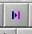 button to move the playback pointer to the position of the cursor. Now playback will begin from that point. You can set it back “out of sight” so that playback will begin before the start of the segment you're editing by shifting it to the left via the 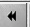 button.
Notice the Size, Spacing, and Smoothing sliders.
The Size slider changes the size of the font used to render the notes.
The Spacing slider can be used to adjust the horizontal spacing of the notes, to draw them closer or further apart. Useful for spreading out particularly complicated rhythms for easier reading.
The Smoothing slider is useful for cleaning up performance data somewhat, to make it more legible.
All of these controls are also available from the View menu. (Note that there is also a View -> Note Font option that isn't available graphically. Use this to switch between “feta” and the “rg2.1” font. The latter isn't is as pretty, but it renders more quickly on slower hardware.)
{kind=link}
Editing the Part
Transposing
Well, let's look at the part. This definitely should have been a piccolo part. My head hurts just looking at this stuff. Let's transpose it down an octave and see what it looks like. Let's make that two octaves! I can get that high with my flute, but my dog would hate me. Two octaves are good.
Select Edit -> Select Whole Staff, then go to the Transforms menu. Lots of good stuff to play with here, but we want Transpose... Since we're going to go down two octaves, we might as well go for the Transpose... option at the bottom. Use the arrows to dial down, or else enter -24 into the input box. Positive numbers mean an upward transposition, and negative numbers will transpose downward.
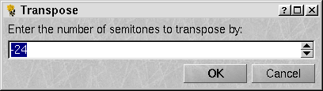
Cleaning Up Ugly Data
Now that we're down to a reasonable register, let's do something about the ugly notes. The problem with human performance data is that it doesn't scale well into notation. You'll notice that some of the notes are displaying in yellow. That's because they're notes whose timing and duration don't quite make sense to Rosegarden within the context of this measure, so it has colored them to let you know that the notes on the page are only an approximation of what will actually be played. To see a view of the data in a more pure format, use the Matrix or Event List editors, which we'll take a look at later on.
Since our objective here is to make the notation more readable, we might as well remain here and alter the data until it better fits into place within the context of notation. In this instance, readability is more important to us than the faithful rendering of a human performance, so we're going to end up making “physical” changes to the data along the way.
Let's start by seeing what that Smoothing slider can do for us... Each notch makes the rhythm progressively less obnoxious to read, leaving the notes in place. Adjust the slider, and see what results. I found that the final notch was too high, and the next lower notch was looking better, but wasn't really quite there.
Let's try making these smoothed values permanent. Select the whole staff, and let's try Transform -> Fix Smoothed Values...
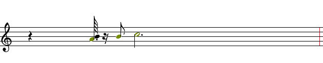
Well, that didn't quite have the desired effect, did it? The timings are still too far off. Remember ctrl-Z is a shortcut for Edit -> Undo.
Quantize
I think this data is so messy that we're going to have to quantize it. Let's Undo that last change, and play with Transform -> Quantize instead. Let's tell it to Quantize: Event positions, and round durations to exact notes. We'll leave the Base duration unit at 16th, and accept the default Note rounding values and see where that gets us:
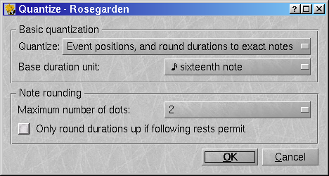
Not too bad. It's looking much better:
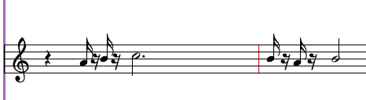
Let's see how those changes sound, and then we'll see about turning those 16th note/rest pairs into something a little easier to read...
The quantized notes seem to have fallen into place along sane boundaries without having an undue impact on the rhythm or feel of the piece. Bearing that in mind, let's back up a step and see what would have happened if we had quantized on 8th note boundaries. Hit ctrl-Z or use Edit -> Undo, then run through the Transformations -> Quantize dialog again, specifying a base duration of 8th note this time around.
Very nice indeed, and Rosegarden has rendered some 16th notes and other odd bits as required, ignoring the base duration when it really had to. That's one of the best jobs of quantization I've seen in a notation editor. There won't be much clean-up to do from here:
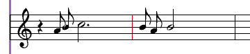
Adding Marks
We've changed the flavor somewhat by lengthening those notes. Let's make them stacatto. There isn't currently an icon for this, but you'll find it on the menu. First you'll need to make a selection.
If it's not already the default, choose the Select cursor 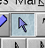 from the Toolbar. Click at a point to the left of one of the notes to begin the selection. Drag the blue selection box so that it includes the first two 8th notes. When they're selected, they'll turn blue. Now use Marks -> Add Stacatto. The dots appear:
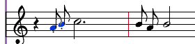
Auto-Beam
Now let's add beams. Edit -> Select Whole Staff, then Group -> Auto Beam to beam these notes into logical groupings:
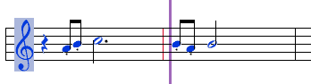
Changing Note Durations
One measure further into the segment, there are some rhythms that could probably be written so that they're less awkward to count. Let's see about changing them.
There's an odd dotted 16th with 32nd rest combination that should probably be another stacatto 8th note:
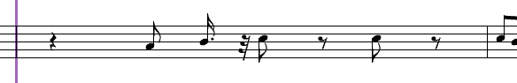
Let's convert that into an 8th note. Click the 8th note button 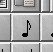 on the Toolbar, then click on the offending dotted 16th note's head. It changes into an 8th note, and the rest disappears. Note that Rosegarden pads out the rests as necessary, to keep the correct time in the measure.
Let's Add Some Slurs
Let's add some slurs as well. Highlight the first two 8th notes in this measure, then use Group -> Add Slur. You should be looking at something very like this:
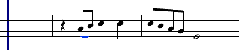
Manual Beaming
Now let's do two more things to enhance readability. I'm used to reading beamed groups that count out to one beat. Let's separate those two groups, and add another slur. Select the first two 8th notes in that four-note group, then use Group -> Beam Group to fuse those two together. The remaining two notes adapt automatically, and remain beamed. Now select all four of the 8th notes plus the half note and add a slur. Finally, notice that the note stems are in the way of the slur. Let's select the second pair of 8th notes and use Notes -> Stem Direction -> Stems Down or else ctrl-PageDown to change their direction. You should wind up with a measure resembling this one:

Continue in this fashion until you finish altering the notation so that it's nice and tidy. I think you should have a pretty good idea how to proceed from here, so I'm not going to walk you through the rest of this job.
The Text Cursor
Now let's add some directions. Exchange your Select cursor for a Text 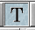cursor. Click toward the beginning of the staff, near the clef. Let's start by adding a tempo and a dynamic of ff, (since my dynamic range is from ff to fffff :). Click the cursor where you want the text to appear, then configure it via the dialog.
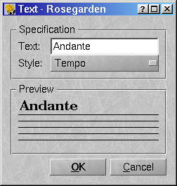
It's pretty self-explanatory. My score ended up looking like:
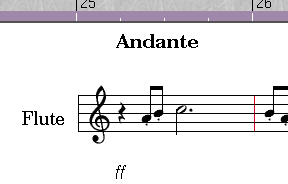
Adventuresome people--especially Debian users--wanting to play with the CVS may wish to take a look at my get-rg script. I'm not going to go into detail on how to use it, or how to alter it to suit different environments. Its purpose is to simplify the job of staying up to date with CVS by logging in, updating, compiling, and then managing packages via checkinstall. I include it only because it's so extremely convenient to use that I hate to keep it to myself. I eventually plan to make it universal enough to compile anything from CVS, and install packages on any distro that checkinstall supports, but that is low on my list of priorities at the moment.